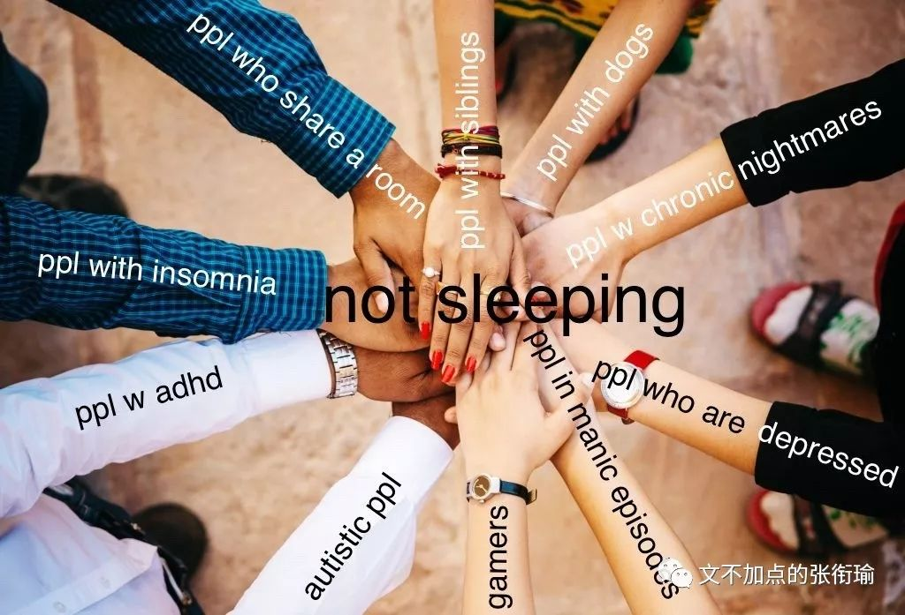
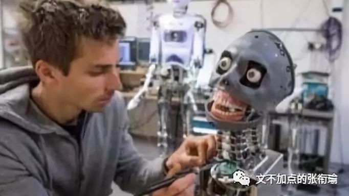
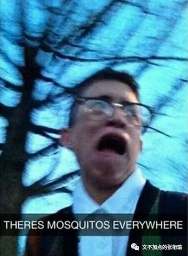
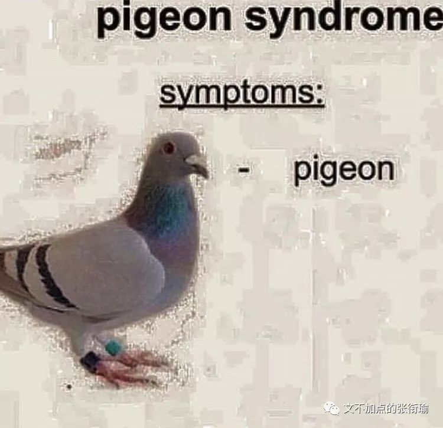

按照我现在这样飘忽不定的性格来看
我上辈子可能是一只游走球
本文共计2260个字
是第78篇推送
戏精文学其实是我刚刚定义的 定义为老戏骨的新文学 也是不知道怎么就定义了的 一般来说 戏精文学文学里往往有一个情境 但并不告诉你这个情境是怎么产生的 因为情境也就随缘而来 倏忽即去 我们关心的只是戏精多戏时候的一刹那 只不过表达在了图片上 我们往往称之为沙雕图或者#memes #hmmm 表达在文字里 则是戏精文学or沙雕文学
虽然今天是第一次和暗恋对象一起出门
但我已经连我们的孩子叫什么名字都想好了
喜欢or暗恋的人：在吗？
我：（打开Google 键入“结婚时应该穿什么” Enter发起搜索）


在我的定义里 这都算是戏精文学 当然第一个是我自己写的 第二个是我今天看到的一张沙雕图 然后我描述了一下图里的内容 戏精文学的存在 大概是真真正正像我这样的老戏骨然后内心还有不死的沙雕梦才能产生的 实际上 所有的沙雕文学都必然是诸多种类当中最新兴出现也最为亲切的 比如例证中说到的出门 其实广泛地存在于当代内心戏很多的沙雕病患当中
日常生活中 这不过是一种调侃 但如果稍微考据一点来看待类似词句的出现
流行的 令人眼前一亮的 是会有着一点出现合理性的


我多食芒果班戟甜和肥宅快乐水甜
因为身边人的恋爱都太甜腻了
我要调节一下体内循环的渗透压
喜欢你是年少时的欢喜
可有些人年少的时候只吃牛欢喜
小学生的作业比大学生好多了
好就好在可以不用自己写 抄答案也可以
但现在的科研代码在GitHub也抄不到了
人生如逆旅 你我皆行人
但因为都还是用脚在走路
所以还是步行


沙雕图和戏精文学之所以开始泛滥 在我的生活里给出的答案 是需要 能让我动一点脑筋 有一点圈子基础 但又能体现和生活对打的东西出来 类似人艰不拆这样的 不拆但是可以演出来 演完两下之后 继续做一个社畜去和生活对打round
next 如果不知道什么是快乐水 什么是甜甜的恋爱 或者忘记了什么是渗透压的话
也许这样的沙雕文就只不过是隔靴搔痒 没有什么感觉罢辽
想做按时下班的太阳
或者月亮也可以
但有时候云太多了
我也不知道是不是该下班了
葫芦僧登上了葫芦岛
判案的时候有人大喊一声“葫芦僧！”
——“诶~是谁在叫我？”
然后就被吸到了葫芦里面去

河北师大附中
那个少年只是肚子饿了
并不是在打PING-PONG球
听说西班牙馅饼和西班牙宪兵
是同一个味道
我想问问港岛妹妹到底送的哪个
但她变成长岛冰茶被喝掉了
有时候也会有一些歌曲空耳 还有沙雕联想 比如我也没有去认真计算我到底眼睁睁听着万青杀了多少石家庄人
但是每次他告诉我 生活在经验里 直到大厦崩塌 我都似懂非懂地继续听下去 李志就格外沙雕了
天空之城哭就算了 西班牙的到底是馅饼宪兵or syndrome related to sexual one 算了算了 好像也没有什么时间去考据 laugh
line如果get√不到的话 还需要解释的就都显得比较隔阂了

我有一只柯基名叫cookies
上次清理电脑我点了清理系统文件
后来的ta 都不是原来的ta
在外和人打招呼 我一般用招手+wink：）
后来听他们说 “这个聋哑人真是有爱呢”
爸妈要我问你初几来我家
——等我当了财神爷 天天住你家
茶颜店员：请问需要推荐吗？
——芊芊马卡龙七分甜少冰麻烦打足忌廉
——马卡龙麻烦放匀
——谢谢，我想应该不用推荐了
白炽灯关掉时 电感会回来在看一下线圈
我问电感为什么不早一点回来呢
电感说浪子只在该回来的时候才能回来
等我有钱了 要买很多香辣鸡翅
然后那一餐就只吃炸鸡
如果还可以就雇人把骨头都先剔掉
如果还可以就香辣鸡腿也来一遍
可爱不是长久之计
可爱我也不是
可爱多才是！！！


戏精文学取材反正也就都是日常生活blah 每天看到了什么就说什么喏 老戏骨本人最好是生活很丰富的人才可以 但就算不是生活丰富的人 也至少应该是一个总是观察生活而且充满想象力有时候晚上还会起来梦游的人


如果不是这样的话 那生活和咸鱼还有什么区别呢 那样的话也就不是衔瑜了 所以自己宅在家的时候 就越发喜欢朋友圈里别人发各种各样的在哪里玩或者吃到了什么很难吃到的好吃的
点个赞或者评论一下 四舍五入了只有就觉得好像自己也去了那里吃了一遍一样 看吃播的时候我也有这种同理心
可能这就是老戏骨们必备的换位思考素养吧（笑
柠檬树上柠檬精
柠檬树下是戏精
不好意思刚拿驾照不能上高速
——旁边坐着老司机 所以还是可行
稍等一下
我的expresso忘记加水稀释了
我要通宵到明天破晓
然后吃下三个人的早饭
再去睡午觉
边蹲坑边刷抖音的人
你真的关心过拍抖音那位的心理吗
他们说爱情容易走丢
可我只知道我的钱走丢了
肉却没有
今天有点烦
我也不知道是为什么
姑且称作大男孩的烦恼
散了吧散了吧~



自嘲或者引发群嘲 嘲本身是评价戏精病患生病到了哪一个程度的标准 最无聊的人 是最开不起玩笑的人 别人在收了被子之后说“这是太阳的味道哇” 嘲讽这是“被罩上的螨虫被烤焦了”的人 都比简简单单回答“嗯”一声的人 要有太多太多的生活情调
虽然我还不可以炒老板的鱿鱼
但至少老板在群里发消息
我可以拒绝回答“收到”或者“复”
再说得久远一点 从短平台开始了之后 人们交流信息的不趋同就越发地显著 偏爱几百万字鸿篇巨制《追忆似水年华》这样子的 偏爱百度百家号交流的 以及偏爱抖音快手这些的 我这篇只是在说关于老戏骨和戏精文学的事 对那些平台我也不予置评

如果一定要我批评的话 有些小说 我看了这一章的标题之后我就可以直接一个劲地往下翻翻翻 两个小时我可以看一百万字 如果一定要我批评的话 短视频平台不能倍速播放最忍不了的是不能静音是存在的最大问题 所以我还是回到了戏精这一块 继续刷图写小段子 然后不断又不断地去和生活对打

我单单说戏精文学是在面对巨大生活压力而又想象力实在丰富 大部分自己的想法都不能实现智能稍微脑内一下的时候 产生了现在的戏精文学和老戏骨以及像我这样的重症沙雕图病患 类似于豹笑的抑郁症患者 当然有的图看起来是真的很令人觉得又奇怪有开心 戏精文学也是真的戏精
祭一张沙雕图
既然是戏精
当然就没有什么开头
也没有什么结尾
因为长城润滑油
是真的很滑

戏精的特点就是可以
很好地利用同理心
比如说用把倒刺撕到手肘
来表示真的很疼
或者像这样自制沙雕图

生活所迫
事务繁忙
告辞
下学期
可再不要这样了